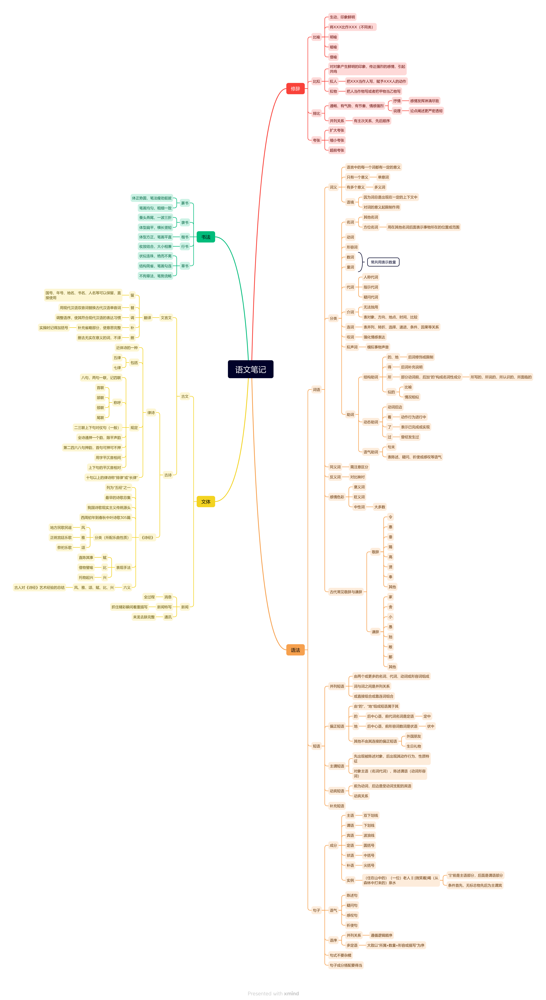

语文笔记2
1. 修辞
1.1. 比喻
- 生动,印象鲜明
- 分类
- 明喻
- 暗喻
- 借喻
1.2. 比拟
- 对对象产生鲜明的印象,传达强烈的感情,引起共鸣
- 拟人
- 把XXX当作人写,赋予XXX人的动作
- 拟物
- 把人当作物或者把甲物当乙物写
1.3. 排比
- 通畅,有气势,有节奏,情感强烈
- 抒情 感情发挥淋漓尽致
- 说理 论点阐述更严密透彻
- 并列关系 有主次关系、先后顺序
1.4. 夸张
- 扩大夸张
- 缩小夸张
- 超前夸张
2. 语法
2.1. 词语
2.1.1. 词义
- 语言中的每一个词都有一定的意义
- 只有一个意义
单义词 - 有多个意义
多义词 - 语境
- 因为词总是出现在一定的上下文中
- 对词的意义起限制作用
2.1.2. 分类
2.1.2.1. 名词
- 其他名词
- 方位名词 用在其他名词后面表示事物所在位置或者范围
2.1.2.2. 动词
2.1.2.3. 形容词
2.1.2.4. 数词
2.1.2.5. 量词
常和数词共用表示数量
2.1.2.6. 代词
- 人称代词
- 指示代词
- 疑问代词
2.1.2.7. 介词
- 无法独用
- 表对象、方向、地点、时间、比较
2.1.2.8. 连词
- 表并列、转折、选择、递进、条件、因果等关系
2.1.2.9. 叹词
- 强化情感表达
2.1.2.10. 拟声词
- 模拟事物声音
2.1.2.11. 助词
- 结构助词
- 的、地
后词修饰或限制 - 得
后词补充说明 - 所
部分动词前，后加“的”构成名词性成分所写的，所说的，说认识的，所面临的 - 似的
- 比喻
- 情况相似
- 的、地
- 动态助词
- 动词后边
- 着
动作行为进行中 - 了
表示已完成或实现 - 过
曾经发生过
- 语气助词
- 句末
- 表陈述、疑问、祈使或感叹等语气
2.1.3. 同义词
需注意区分
2.1.4. 反义词
对比映衬
2.1.5. 感情色彩
- 褒义词
- 贬义词
- 中性词 （占大多数）
2.1.6. 古代常见敬辞与谦辞
2.1.6.1. 敬词
- 令
- 惠
- 垂
- 赐
- 高
- 贤
- 奉
- 其他
2.1.6.2. 谦词
- 家
- 舍
- 小
- 愚
- 拙
- 敝
- 鄙
- 其他
2.2. 短语
2.2.1. 并列短语
- 由两个或更多的名词、代词、动词或者形容词构成
- 词与词之间是并列关系
- 或直接组合或靠连词组合
2.2.2. 偏正短语
- 由“的”、“地”、“地”组成的短语
- 的
后中心语，前代词名称是定语（定中） - 地
后中心语，前形容词数词是状语（壮中） - 其它不由其连接的偏正短语
外国朋友，生日礼物
2.2.3. 主谓短语
- 先出现被陈述对象，后出现其动作行为、性质特征
- 对象主语（名词代词），陈述谓语（动词形容词）
2.2.4. 动宾短语
- 前为动词，后边是受动词支配的宾语
- 动宾关系
2.2.5. 补充短语
2.3. 句子
2.3.1. 成分
- 分类
- 主语 双下划线
- 谓语 下划线
- 宾语 波浪线
- 定语
圆括号
对主语的修饰 - 状语
中括号
对谓语的修饰 - 补语
尖括号
在状语后面对状语的补充
- 实例
（住在山中的）（一位） 老人 【微笑着】 喝 （从森林中打来的）泉水1- 条件首先，无标志物先后为主谓宾
2.3.2. 语气
- 陈述句
- 疑问句
- 感叹句
- 祈使句
2.3.3. 语序
- 并列关系
遵循逻辑顺序 - 多定语
大致以所属+数量+形容或描写为序
2.3.4. 句式不要杂糅
2.3.5. 句子成分搭配要得当
3. 书法
| 篆书 | 隶书 | 楷书 | 行书 | 草书 |
|---|---|---|---|---|
| 体正势圆，笔法瘦劲挺拔 | 蚕头燕尾，一波三折 | 体型方正，笔画平直 | 收放结合，大小相兼 | 状似连珠，绝而不离 |
| 笔画均匀，粗细一致 | 体型扁平，横长竖短 | 结构简省，笔画勾连 | ||
| 不拘章法，笔势流畅 |
4. 文体
4.1. 古文
4.1.1. 文言文
4.1.1.1. 翻译
- 留
- 国号、年号、地名、书名、人名等可以保留，直接使用
- 替
- 用现代汉语双音词代替古代汉语单音词
- 调
- 调整语序，使其符合现代汉语的表达习惯
- 补
- 补充省略部分，使意思完整
- 补充部分需要用括号括出
- 删
- 删去无实在意义的词，不译
4.1.2. 古诗
4.1.2.1. 律诗
- 近体诗的一种
- 包括
- 五律
- 七律
- 规定
- 八句，两句一样，记四联
- 称呼
- 首联
- 颔联
- 颈联
- 尾联
- 二三联上下句（一般）是对账句
- 全诗通押一个韵，限平声韵
- 第二四六八句押韵，首句可押可不押
- 用字平仄相间
- 上下句的平仄音相对
- 十句以上的律诗称"排律"或"长律"
4.1.2.2. 《诗经》
- 被列为"五经"之一
- 最早的诗歌总集
- 我国诗歌现实主义传统源头
- 西周初年到春秋中叶诗歌305篇
- 分类
- 风 地方民歌民谣
- 雅 正统宫廷乐歌
- 颂 祭祀乐歌
- 表现手法
- 赋 直陈其事
- 比 借物譬喻
- 兴 托物起兴
- 六义
- 风、雅、颂、赋、比、兴
- 古人对《诗经》艺术经验的总结
4.2. 新闻
- 分类
- 消息 全过程
- 新闻特写 抓住精彩瞬间着重描写
- 通讯 来龙去脉完整
5. 思维导图
build by XMind

Footnotes:
1
基于样式限制，这里使用斜体代替双下划线